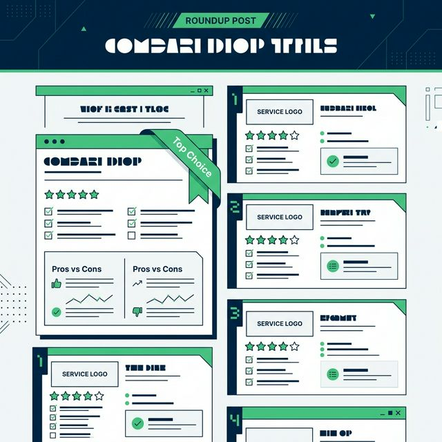
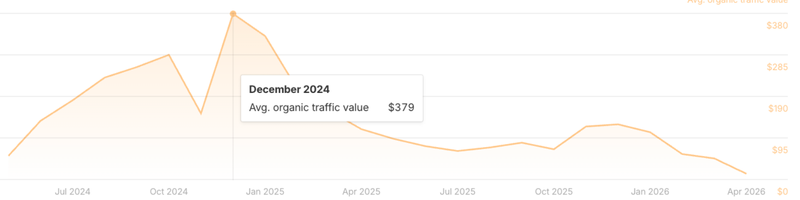
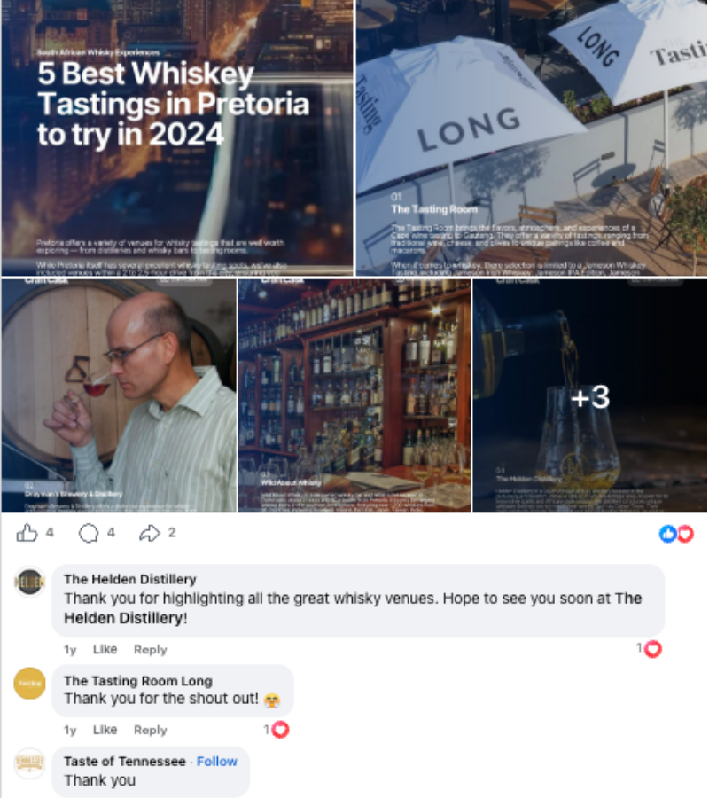
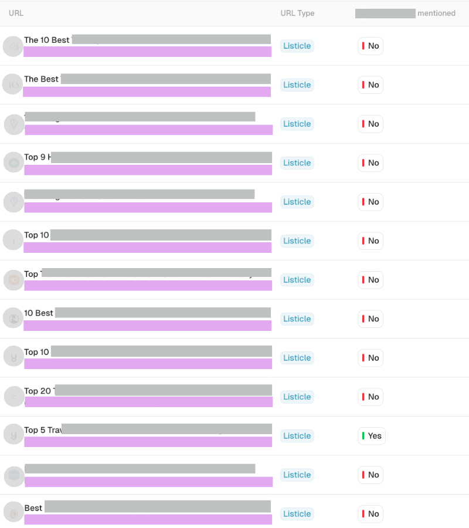

What is a roundup post? Key benefits for brand marketing in 2026

A roundup post is one of the few content formats that consistently delivers across SEO, traffic growth, and revenue impact.
There are many types of roundup posts (often called listicles), including those focused on products, services, platforms/tools, providers, and experts.
Search queries like:
- “best CRM software”
- “top SEO agencies”
- “email marketing tools”
- “top LLM visibility monitoring tools”
are dominated by roundup-style content because they match user intent: comparison and decision-making.
This article breaks down the real business value of a strong roundup post, including how it captures multiple keywords, earns backlinks, drives measurable traffic value, and positions your content for AI-driven search.
Need a roundup strategy for your website? Compare our packages to get started.
Key Takeaways
-
01.
A roundup post can rank for your primary keyword ("best/top" + topic), medium and long-tail variations ("best" + topic + use case), and broader head terms ("topic"). This allows a single URL to capture multiple positions across relevant search results.
-
02.
Roundup posts often generate measurable traffic value—the estimated monthly cost to acquire the same traffic via paid search—reflecting strong commercial intent.
-
03.
Structured comparison content is increasingly cited in AI answers and search features.
-
04.
Publishing and being featured in roundups can improve brand visibility across AI systems by increasing the frequency and consistency of brand mentions.
What is a Roundup Post?
A roundup post is a curated list of tools, services, or experts centered around a specific category or use case. Unlike a single-product review, a roundup provides a horizontal view of a market, enabling users to evaluate multiple options side-by-side.
In 2026, this format acts as a "decision hub"—balancing scannable comparisons for humans with structured data clusters that AI systems and LLMs use to generate authoritative recommendations.
What Are Types of Roundup Posts?
- Product and affiliate roundups: Curated lists of products with reviews and recommendations.
- SaaS/tool comparisons: Feature breakdowns, pricing tiers, and use cases.
- Service/provider lists: Vetted agencies or professionals with specialties.
- Location-based roundups: City or region-specific recommendations.
- Expert roundup posts: Insights from multiple contributors.
- Content curation roundups: Collections of useful resources.
What Makes Roundup Posts Different?
They have a specific search intent
Searches that include terms like “best”, “top”, or “vs” + your topic signal a clear comparison or evaluation intent.
Examples: “best CRM software for small businesses” or “top SEO agencies in London”.
The user is positioned in a decision-making phase. They are comparing options based on pricing, features, suitability for their use case, or reputation before taking action.
This allows you to meet the searcher at a warmer point in their journey with content that directly supports decision-making.
They have a structure that's useful to searchers and scannable by engines and LLMs
Roundup posts follow a structured format that benefits both users and search systems. For users, the format is easy to scan. Listings are typically broken into consistent sections such as features, pricing, best use cases, and pros and cons.
For search engines and LLMs, this structure creates clearly defined, extractable information. Each entity becomes a discrete unit with associated attributes, making it easier to understand relationships between products, services, and use cases.
1. Captures High-Intent Keywords
Roundup posts dominate “best” and “top” queries — some of the highest-converting keywords in search. These include best + product/service, top + tools/platforms, and alternatives + brand.
A key advantage of a roundup post is that it doesn’t just rank for a single keyword. It can rank for broader and related queries at the same time, allowing one page to capture demand across multiple entry points.
Example: A page targeting “best ergonomic office chairs” can also rank for ergonomic office chairs, office chairs, and top office seating. This allows you to occupy more positions in SERPs, ranking alongside your own ecommerce or category pages.
2. Generates Measurable Traffic Value
Traffic alone is not a useful metric. What matters is traffic value—the estimated cost of buying the same traffic via paid search ads.
A roundup ranking for “best CRM software” could generate traffic worth hundreds or even thousands of dollars per month in equivalent ad spend. Paid campaigns stop when budget is paused, but organic rankings continue to generate traffic without incremental cost.

3. Can Earn Backlinks & Social Shares
Product roundups, location-based roundups, and curated lists are more likely to be shared by the businesses featured. These act as promotional assets for those included.
In contrast, comparison-style roundups that position you alongside competitors on your own website are less likely to be shared by the entities listed. Backlinks here are more likely to come from third-party sites that reference your content as a resource.

4. Supports LLM Citations & Brand Visibility
AI systems increasingly pull structured information from content that compares options and summarises features. A well-structured roundup post aligns with this by providing discrete data points (features, pricing, pros/cons) that AI can extract.
By contribution to or getting featured in roundups, you increase the likelihood of your brand being mentioned across multiple sources, strengthening visibility in AI-driven search environments.

Final Thoughts
A roundup post is one of the most commercially effective formats in SEO. It aligns with how users search, how search engines rank content, and how AI systems extract information. If your goal is to create content that drives real business outcomes, a well-executed roundup should be a core part of your strategy.
Ready to rank your website?
Compare our packages to get started.